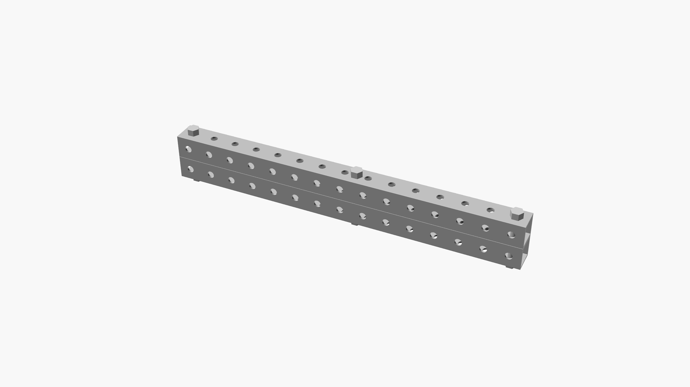

trusses revision 5256
^ Techniques infobox ^^
| image | Truss-spacers.scad.png |
| designer | Phil and RJ Jergenson |
| date | |
| parts | [[frames|Frames]], [[nuts|Nuts]], [[bolts|Bolts]], [[end_caps|End caps]] |
| techniques | [[bolting|Bolting]] |
| tools | [[wrenches|Wrenches]] |
| git | |
| stl | |
Introduction
A truss consists of typically (but not necessarily) straight members connected at joints, traditionally termed panel points. Trusses are typically (but not necessarily) composed of triangles because of the structural stability of that shape and design. A triangle is the simplest geometric figure that will not change shape when the lengths of the sides are fixed. In comparison, both the angles and the lengths of a four-sided figure must be fixed for it to retain its shape.
Challenges
Approaches


Space frame (3d truss)
In architecture and structural engineering, a space frame or space structure (3D truss) is a rigid, lightweight, truss-like structure constructed from interlocking struts in a geometric pattern. Space frames can be used to span large areas with few interior supports. Like the truss, a space frame is strong because of the inherent rigidity of the triangle; flexing loads (bending moments) are transmitted as tension and compression loads along the length of each strut.